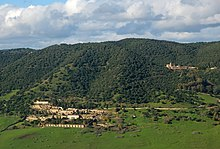
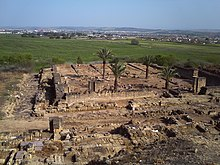

Medina Azahara

Medina Azahara, castellanización del nombre en árabe, مدينة الزهر Madīnat al-Zahrā («la ciudad brillante»),2 fue una ciudad palatina o áulica que mandó edificar el primer califa de Córdoba, Abderramán III, a unos 8 km en las afueras de Córdoba en dirección noroeste, a los pies de Sierra Morena. Los principales motivos de su construcción son de índole político-ideológica: la dignidad de califa exige la fundación de una nueva ciudad, símbolo de su poder, a imitación de otros califatos orientales y sobre todo, para mostrar su superioridad sobre sus grandes enemigos, el recién instaurado Califato fatimí de Ifriqiya, la zona norte del continente africano. Además de oponentes políticos, lo eran también en lo religioso, ya que los fatimíes, chiíes, eran enemigos de los omeyas, mayoritariamente de la rama islámica suní. El yacimiento arqueológico de Medina Azahara está declarado Bien de interés cultural en la categoría de Monumento desde el año 1923,3 además de ser declarada oficialmente como Patrimonio de la Humanidad de la Unesco el 1 de julio de 2018.4 En 2019 recibió más de 285 672 visitantes, siendo uno de los espacios culturales más visitados de Andalucía,5 mientras que en 2020, debido a las restricciones de movilidad ocasionadas por la pandemia de COVID-19, las visitas se redujeron a 87 315 personas.6

La leyenda popular, documentada por historiadores como al-Maqqari, sostenía que la etimología de la ciudad, az-Zahra' (o Azahara en castellano), provenía de la concubina favorita de Abderramán III y que existió una escultura suya en la entrada. A pesar de que la estatuaria era algo común en la ciudad, Marianne Barrucand sostiene que la existencia de dicha estatua sería muy improbable.7 Por otro lado, Felix Arnold argumenta una explicación más sencilla: que también significaba «la ciudad brillante» o «radiante»,8 emulando a otras ciudades califales fundadas por los abasíes, como, por ejemplo, Madinat as-Salam, «la ciudad pacífica», la actual Bagdad; y los fatimíes Madinat al-Qahira, «la ciudad victoriosa», la actual El Cairo.9 Jonathan Bloom también apunta a una respuesta a los rivales de Abderramán, los fatimíes, debido a que esta dinastía declaraba que descendían de la hija de Mahoma, Fátima az-Zahra, «la radiante».8
Aunque el origen de la ciudad no carece de elementos legendarios, se sabe que la construcción comenzó a finales del año 936 y se continuó durante los cuarenta siguientes, alcanzando los tiempos de su hijo y sucesor en el califato, al-Hakam II. El historiador del siglo xvi al-Maqqari nombra a Maslama ibn 'Abdallah como el alarife de la ciudad, aunque no está claro cómo de relevante fue su papel o qué porcentaje de planos diseñó. Los edificios de mayor calibre no comenzaron a construir hasta 940, y la evidencia sugiere a que se realizó por fases, con todo el proyecto general modificándose mientras que se ejecutaban los trabajos. La mezquita aljama fue consagrada en 941, mientras que en 945 se trasladó la corte a la ciudad y un año más tarde se pavimentó el camino entre la nueva ciudad y Córdoba. Finalmente, en 947 se trasladó el aparato de estado desde Córdoba, incluyendo la ceca o casa de la moneda (dar al-sikka). No obstante, la construcción de la ciudad continuó durante todo el reinado de Abderramán III, hasta 961, e incluso parte del reinado de su hijo Al-Hakam II (961-76). Asimismo, también participaron en los proyectos constructivos algunos oficiales de alto rango.71415